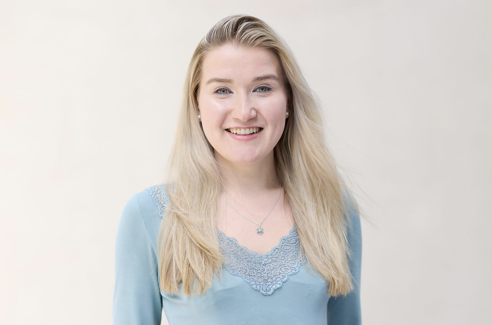

|
 I am a Research Fellow at the University of Oxford, working with Philip Torr, and a Research Affiliate at MIT. My research focuses on trustworthy multimodal machine learning, especially representation learning, machine unlearning, and evaluation. I am a member of the ELLIS society, and a Junior Research Fellow at Kellogg College, Oxford. My work has been supported by fellowships from Microsoft, Encode AI for Science, ETH Zurich, and others. I received my PhD in Artificial Intelligence from the University of Amsterdam, advised by Maarten de Rijke and Paul Groth, and my MSc in AI from KU Leuven where I worked with Marie-Francine Moens. In industry, I worked on post-training Gemini at Google DeepMind, evaluated world models at Microsoft Research, improved the robustness of vision-language models at Bloobmerg AI, and modelled cross-device user intent at Amazon Science. Beyond research, I work to make the ML and broader STEM community more inclusive. I served as General Chair for the WiML at ICML 2025, organized the WiML Mentorship Program, serve on the committee of the Piscopia Initiative's Oxford branch, and mentored through the ELLIS Inclusive AI initiative. Feel free to get in touch! I am always interested in supervising MSc and PhD students. If you would like to work with me, please send a brief note describing your background and research interests.
|